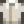

White Algae
| White Algae | |||||
| It's super slimy. | |||||
| Information
| |||||
| Source |
| ||||
| Location | The Mines (floors 20 & 60) • The Sewers • Mutant Bug Lair • Witch's Swamp | ||||
| Season |
| ||||
| XP |
| ||||
| Energy / Health |
| ||||
| Sell Price | |||||
White Algae is an item which can be caught with a Fishing Pole during all seasons at any underground location (Floors 20 & 60 of the Mines, the Sewers, the Mutant Bug Lair, or the Witch's Swamp).
White Algae can also be dropped by several Monsters: Grubs, Mutant Grubs, Flies, Mutant Flies, Bugs, and Red, Purple, Copper, and Iron Slimes. A Ghostfish Fish Pond may produce 5 White Algae when the population of the pond reaches 9.
White Algae is displayed in the Fish section of the collection tab, and counts towards the four fishing Achievements.[1] However, it is otherwise not considered to be a fish, and therefore cannot be sold to Willy at the Fish Shop, does not benefit from fish price bonuses, cannot be used in place of "Any Fish" in recipes, and cannot be put in a Bait Maker, Fish Smoker, or Fish Pond.
Gifting
| Villager Reactions
| |
|---|---|
| Hate | |
Bundles
Five White Algae are one of the options in the  Wild Medicine Bundle in the Crafts Room (Remixed).
Wild Medicine Bundle in the Crafts Room (Remixed).
Recipes
| Image | Name | Description | Ingredients | Energy / Health | Recipe Source(s) | Sell Price |
|---|---|---|---|---|---|---|
| Pale Broth | A delicate broth with a hint of sulfur. |
|
Tailoring
White Algae can be used in the spool of the Sewing Machine to create the dyeable 
Quests
- Five White Algae are requested by Ghostfish in a Fish Pond quest to increase the capacity of the pond from 5 to 7.
- Five White Algae may be requested by the Raccoon at the Giant Stump as part of his third request, or as part of any request starting with the sixth.
References
- ↑ In the game data (Data/Objects.xnb) the type assigned to White Algae is "Fish", but it is not assigned the Fish category (-4). The label displayed in-game and most uses are controlled by the category.